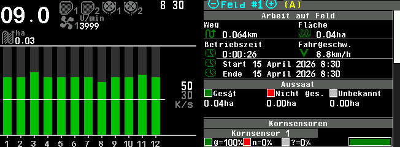
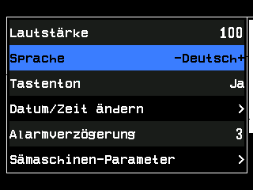
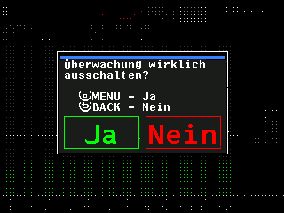
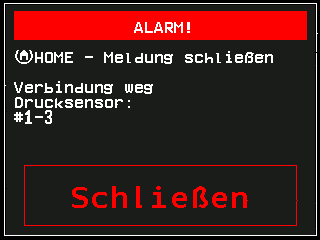

Bildschirme, Menüs, Kontextmenüs und Fenster
Das, worüber am Hectare Mini alles läuft — die Arbeitsbildschirme, die Menüs, das Kontextmenü eines Geräts, die fragenden und meldenden Fenster und die Zugriffsstufen.
Alles am Panel geschieht über die Arbeitsbildschirme, die Menüs, das Kontextmenü eines Geräts und die Fenster, die etwas fragen oder melden. Zahlen geben Sie am Ziffernblock ein.
Die Arbeitsbildschirme
„HOME“ wechselt von einem Arbeitsbildschirm zum nächsten, immer in dieser Reihenfolge:
| Bildschirm | Angezeigt |
|---|---|
| Startbildschirm | Immer. |
| Aussaattabelle | Immer. |
| Statistik | Immer. |
| Motoren | Nur wenn die Maschine Dosiermotoren oder Fahrgassen-Aktuatoren hat, und nur oberhalb der Zugriffsstufe „Fahrer“. |
| Sollmengen | Immer. Ein weiteres „HOME“ führt zurück zum Startbildschirm. |
„BACK“ führt aus der Aussaattabelle, der Statistik und dem Bildschirm Motoren zurück zum Startbildschirm. Den Bildschirm Sollmengen verlassen Sie nur mit „HOME“.

Menüs
„MENU“ öffnet das Menü des aktuellen Bildschirms — auf dem Startbildschirm das Hauptmenü.

- Gewählter Punkt. Schwarzer Text auf blauem Balken. „UP“ und „DOWN“ bewegen den Balken; am Ende der Liste springt er zum anderen Ende.
- Wert zwischen − und +. Steht am gewählten Punkt: Sie ändern ihn mit „PLUS“ und „MINUS“ direkt in der Liste.
- Wert eines nicht gewählten Punkts. Das − und + erscheinen, sobald Sie ihn wählen.
- Pfeilspitze. Der Punkt öffnet ein weiteres Menü. Drücken Sie „MENU“.
- Bildlaufleiste. Die Liste ist länger als der Bildschirm.
| Was Sie rechts sehen | Was es bewirkt |
|---|---|
| Eine Pfeilspitze | Öffnet ein weiteres Menü. Drücken Sie „MENU“. |
| Ein Wert zwischen - und + | „PLUS“ und „MINUS“ ändern ihn schrittweise. |
| Ein Wert zwischen -[ und ]+ | „PLUS“ und „MINUS“ ändern ihn schrittweise; „MENU“ öffnet den Ziffernblock zur Eingabe. |
| Nichts | Der Punkt führt eine Aktion aus. Drücken Sie „MENU“. |
Sie können einen Punkt auch berühren, um ihn zu wählen, und ein zweites Mal, um ihn zu öffnen. „BACK“ verlässt ein Menü, eine Ebene nach oben.
Das Kontextmenü eines Geräts
Jeder Sensor auf dem Startbildschirm, dem Bildschirm Sollmengen und dem Bildschirm Motoren hat sein eigenes Menü. Halten Sie „MENU“ gedrückt, bis ein Gerät auf weißem Grund erscheint — das ist der Sensoreinstellmodus —, wählen Sie dann das Gerät mit „UP“ und „DOWN“ und drücken Sie „MENU“. Wie Sie in diesem Modus arbeiten: Sensor in die Überwachung nehmen oder aus ihr nehmen. Die Punkte der einzelnen Kontextmenüs stehen in den Sensoreinstellungen.

Fenster, die fragen, und Fenster, die melden
Ein Fragefenster hat einen gelben Streifen mit „Bestätigung“. Die Zeilen unter der Frage nennen die beiden Tasten, die sie beantworten — sie sind von Fenster zu Fenster verschieden, lesen Sie sie also. Das grüne „Ja“ und das rote „Nein“ auf dem Bildschirm können Sie auch berühren. „BACK“ oder eine Berührung außerhalb des Fensters bricht immer ab.

Ein Informationsfenster hat einen blauen Streifen mit „Information“. Es schließt sich von selbst oder mit einer Berührung oder einer Taste.
Alarmfenster

- Roter Streifen. „ALARM!“ — das Fenster meldet eine Störung.
- Hinweis. „HOME“ schließt das Fenster.
- Die Störung. Hier ist die Verbindung zu einem Sensor verloren.
- Art des Sensors. Hier das Gebläse.
- Nummern der Sensoren. Haben mehrere Sensoren derselben Art dieselbe Störung, stehen alle ihre Nummern in der Liste.
- „Schließen“. Berühren Sie es, um das Fenster zu schließen.
Solange das Fenster angezeigt wird, gibt das Panel das Alarmsignal und lässt seine Alarmanzeige leuchten. „HOME“ oder eine Berührung von „Schließen“ schließt das Fenster; „HOME“ gedrückt gehalten schließt es und kehrt zum Startbildschirm zurück. Die übrigen Tasten bewirken hier nichts. Alle Alarme und was zu tun ist: So arbeiten die Alarme.
Zugriffsstufen
| Stufe | Was sie öffnet |
|---|---|
| „Fahrer“ | Was Sie für die Arbeit brauchen. Aktiv nach jedem Einschalten. Die einzige Stufe, auf der Alarmfenster angezeigt werden. |
| „Agronom“ | Verborgene Punkte und Parameter der Maschine und der Sensoren. Braucht einen Code aus dem Datenblatt Ihres Panels. |
| „Service“ | Das Profil und die übrige Inbetriebnahme — nur für den Service. Die Konfiguration von Saatgut- und Drucksensoren braucht nur die Stufe „Agronom“. |
Die Stufe wählen Sie unter „Einstell.“ → „Benutzer“. Wie: Stufe „Agronom“ freischalten. In dieser Anleitung ist bei einem Parameter, der eine höhere Stufe braucht, die Stufe vermerkt.
Ihre Maschine tut etwas, das diese Seite nicht beantwortet? Schreiben Sie an support@agriwelt.com — es antwortet ein Ingenieur.